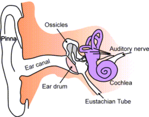
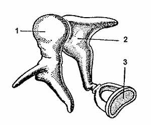
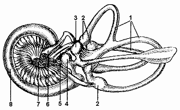
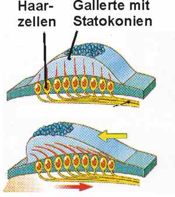

|
SLUCH
Lidké ucho je z technického hlediska tlakový akustický snímač.
Zpracovává signály v rozsahu intenzity 0-140 dB (nad 140 dB dochází k trvalému poškození sluchu).
- 0 db - nejslabší slyšitelný zvuk
- 30 db - šepot, zvuky v tiché knihovně
- 60 db - běžná konverzace, psací stroj, šicí stroj
- 90 db - nákladní auto, travní sekačka
- 100 db - řetězová pila, pneumatická vrtačka
- 115 db - rockový koncert, klakson auta
- 140 db - letadlo, střelné zbraně, zábavná pyrotechnika
Lidský sluch reaguje na tlak molekul vzduchu (zvukové vlnění) o rozsahu
16 - 20 000 Hz.
Vlnění vzduchu vzniká chvěním pružných těles. Maximální citlivost je pro tóny v rozsahu
1000 - 3000 Hz. Pokud mají zvuky chrakateristickou frekvenci, mluvíme o tónech(komorní A = 440 Hz).
Ostatní zvuky vnímáme jako šumy, šramoty a hluky.
Stavba ucha
Stavba sluchového ústrojí

Zevní ucho má dvě části: boltec zvukovod
Boltce fungují trochu jako trychtýř; je-
jich hlavním úkolem je soustřeďovat
zvuky z okolí, tak aby "vtékaly"
do zvukovodu.

Zvukovod je asi 2 centimetry dlouhá, mírně esovitě prohnutá trubice, končící pružnou blankou zvanou bubínek.
Ten odděluje zevní ucho od ucha středního - bubínkové dutiny. Zvukovod obsahuje drobné žlázky produkující ušní maz a
také drobné chloupky, které spolu s mazem brání tomu, aby se nám do ucha dostal prach, větší částice, nebo dokonce hmyz.
Součástí ušního mazu jsou i chemické látky schopné likvidovat baktérie, a tak bránit sluchové ústrojí před infekcemi.
Střední ucho
bubínek
sluchové kůstky
Eustachova trubice
Bubínek -tympanumjehož tenoučká membrána odděluje střední ucho od zevního.
Když na ni dopadne jakýkoli zvuk, vibruje skutečně jako membrána na bubnu.
Tyto vibrace se přenášejí na sluchové kůstky ve středoušní dutině.
Sluchové kůstky

kladívko, kovadlinku a třmínek, které jsou spojeny spolu navzájem i s bubínkem, tvoří takzvaný převodní systém
ucha. Byť dohromady není větší než tableta acylpyrinu, převádí tento systém vibrace z bubínku přes střední ucho dále
do ucha vnitřního, na oválné okénko.
1.kladívko (maleus)
2.kovadlinka (incus)
3.třmínek (stapes).
Vnitřní ucho

1. polokruhovité kanálky
2. baňky
3. utriculus(vejčitý) váček
4. saculus(kulovitý)
5,7 nerv předsíňohlemýžďový
6. nerv lícní
8. blanitý hlemýžď, uvnitř Cortiho orgán se smyslovými buňkami
Hlemýžď - kochlea přejímá vibrace z oválného okénka, je součástí kostěného labyrintu.
Je to složitá soustava dutinek a kanálků ve vnitřním uchu,
jehož sluchové části se vzhledem k typickému tvaru říká hlemýžď, část obsahující ústrojí rovnováhy se nazývá vestibulární ústrojí.
Oválné okénkojsou na něj přenášeny vibrace prostřednictvím sluchových kůstek (třmínek).
Okrouhlé okénko jež je uzavřeno jen tenkou pružnou
blankou.Obě tato okénka jsou uložena vedle sebe
na vnitřní stěně bubínkové dutiny.
Bazální membrána
Membrána uvnitř hlemýždě nesoucí vlastní receptory - Cortiho orgán.
Cortiho orgán
Obsahuje miniaturní vláskové buňky, uložené ve speciální tekutině, jíž je hlemýžď vyplněn. Vlásky buněk,
které vybíhají do blanité části hlemýždě, se podobně jako řasy v moři pohybují současně s tekutinou rozvlněnou zvukovými vlnami
a jejich pohyby se pak mění na nervové impulsy, směřující vlákny sluchového nervu z hlemýždě do mozku.
Sluchový nerv
Nervové impulsy z Cortiho orgánu putují do mozku sluchovým nervem, jemuž se říká též osmý hlavový nebo jen osmý nerv.
Ten pokračuje sluchovou drahou do mozkové kůry, obsahující i centra myšlení, paměti či učení - i ta nám totiž pomáhají
interpretovat, co vlastně slyšíme. Určité poruchy sluchu - nazývané senzoneurální - mohou vznikat i v důsledku nesprávné
funkce tohoto nervu.
Jak sluch funguje
Zvuk který se šíří vzduchem se zvukovodem dostává na membránu bubínku, tu rozkmitá, přes středoušní kůstky se vibrace přenášejí
na endolymfu hlemýždě, která rozkmitá bazální membránu hlemýždě. Dojde k podráždění citlivých buněk Cortiho orgánu, které převedou
pohybovou energii na nervový impuls, který se po sluchovém nervu odvádí do sluchových center v mozku.
sluchová animace
Jak sluch funguje
Vnitřní ucho
Přenos zvuku (animace)
Poruchy sluchu
poruchy zevního ucha a zvukovodu
poruchy středního ucha
poruchy vnitřního ucha
PORUCHY ZEVNÍHO UCHA A ZVUKOVODU
- ucpání zvukovodu
- mazovou zátkou
- cizím tělesem
- infekce (např. houbová) a zánět ve zvukovodu
PORUCHY STŘEDNÍHO UCHA A BUBÍNKU
- zánětlivé procesy ve středoušní dutině (otitidy)
- ucpání eustachovy trubice
- perforace bubínku
PORUCHY VNITŘNÍHI UCHA
nemoci sluchu podrobně
Péče o sluch
- hygiena boltce a zvukovodu
- důsledné doléčení všech infekčních ušních onemocnění
- nevystavovat se nadměrnému působení hluku (nad 100 dB)
- důsledně doléčovat infekční onemocnění dýchacích cest
- u dětí je problematické odtraňování ušní a nosní mandle
- problémy vždy řešit se pecialistou z ORL
Zajímavosti o sluchu
- Absolutní hudební sluch má asi 1 člověk z 10 000. Pozná se podle toho, že dokáže bezpečně
rozpoznat falešný ton bez možnosti srovnání a dokáže ho kdykoliv reprodukovat.
- Relativní hudební sluch je schopnost rozeznat vzájemné vztahy tonů a zapamatovat si melodii.
Absolutní výšku tonu jsou schopni zapamatovat si jen pokud skladby zní, ale po krátké době ji zapomínají, na rozdíl
od lidí s absolutním sluchem. Relativní hudební sluch je nutnost pro provozování hudby.
- Příznaky nedostatečné funkce sluchu
- slyší ale nerozumí řeči
- zesiluje TV
- musí vidět na rty mluvícího, aby mu rozumněl
- neslyší přirozené zvuky v přírodě
- unavený a stresovaný
- vyhýbá se přítomnosti lidí a přímé konverzaci
- V jakém rozsahu slyší?
- PES: 10 - 35 000 Hz
- SLON: 1 - 20 000 Hz
- ŽÁBA: 100 - 2 500 Hz
- ČLOVĚK: 16 - 20 000 Hz
-
Kdyby ucho bylo ještě o jeden řád citlivější, slyšelo by molekulární pohyb částeček vzduchu a vnímalo by jej jako šum.
-
Při hladinách akustické intenzity nad 80 dB už nestačí "obrana" ucha uvolněním sluchových kůstek
a sluch se začne proti přetížení bránit dočasným zmenšením citlivosti sluchových nervů.
ÚSTROJÍ STATOKINETICKÉ = ROVNOVÁŽNÉ = VESTIBULÁRNÍ
Je součástí vnitřního ucha, leží v kostěném labyrintu
(ve sklaní kosti).
Stavba vestibulárního aparátu
- utriculus (vejčitý váček)
- saculus (kulovitý váček)
- tři polokruhovité kanálky vzájemně na sebe kolmé
Stavba a funkce statokonetického ústrojí
Utriculus a saculus

- receptory jsou vláskové buňky, jejichž vlásky vstupují do rosolovité hmoty uložené v endolymfě
- v rosolovité hmotě jsou krystalky CaCo3 (otolity)
- k podráždění vláskových buněk dochází vlivem pohybu rosolovité hmoty proti vláskovým buňkám
díky různým silám (gravitave, zrychlení atd..)
- tím dojde ke vzniku vzruchu který je veden do mozečku
polokruhovité kanálky
- tři na sebe vzájemně kolmé chodby
- na konci každé chodby ampula (rozšířené místo), kde je vyvýšené dno, kde je uložen recpční aparát
- ten se skládá opět z vláskových buněk v rosolovité hmotě (tzv. kupula)
- kanálky jsou vyplněny endolymfou, jejíž pohyb dáždí kupulu a tím vláskové receptory
Funkce vestibulárního aparátu
Utriculus a saculus - staické čidlo
- ZAJIŠŤUJÍ tzv. STATICKÉ REFLEXY = udržování rovnováhy ve všech polohách těla
- uvědomují nás o poloze hlavy a těla vzhledem k působení gravitační síly pomocí pohybu rosolovité hmoty s otolity,
na které působí gravitace
Polokruhovité kanálky - kinetické čidlo
- uvědomují nás o změnách rychlosti pohybu pomocí proudění endolymfy a dráždění cláskových buněk
- rovnoměrný pohyb nevnímáme (jízdu výtahem, jízdu na kanoi, v autě atd...) ale při změně rychlosti se
projeví setrvačnost proudění endolymfy a to vnímáme
- z toho pramení třeba závrati při pohybu rotačním a jeho náhlém zastavení...tělo stojí, ale endolymfa setrvačností proudí
a informuje nás o domělém pohybu
Funkce (animace)
Velká animace
ÚSTROJÍ STATOKINETICKÉ - ZAJÍMAVOSTI
NYSTAGMUS OČÍ
- horizontální a vertikální linie očí se na sítnici zobrazují vždy stejně (co to znamená?)
- Při rotaci těla se oči pohybují v protisměru rotace, tím udržují pohled stále stejným směrem...ale to jde jen do určité hranice
- Je-li jí dosaženo, následuje trhavý pohyb očí ve směru otáčení, který předstihne rotaci.
- Po této fázi následuje opět pomalý pohyb v protisměru atd...
|
Motivační otázky - SLUCH
Podle čeho člověk rozpozná z jakého směru přichází zvuk?
Podle jakých příznaků byste poznali člověka s poruchami sluchu?
Co je absolutní hudební sluch?
Proč nás bolí v uchu pod vodou nebo v letadle?
Může člověk přijít o sluch na diskotéce?
Může se člověk naučit mluvit když je od narození hluchý?
Může se člověk stát např. zpěvákem i když nemá absolutní hudební sluch?
Proč mohou někteří lidé s absolutním sluchem velmi "trpět" v běžném životě?
Motivační otázky - STATOKINETIKA
Proč máme závratě po zastavení rotačního pohybu?
Proč nevnímáme např. rychlost jízdy na kanoi když zavřeme oči?
Dokázali bychom udržet rovnováhu, kdybychom vyřadili z činnosti tlaková tělíska v kůži a oči?
Testy
Odkazy na externí weby
Otázky k opakování
V jakém frekvenčním rozsahu vnímá zvuky lidský sluch?
Jakou maximální intenzitu zvuku člověk krátkodobě snese?
Na jaké oddíly dělíme sluchový orgán?
Jaký význam má Eustachova trubice?
Co znamenají výrazy: maleus, incus, stapes?
Jaké jsou zásady péče o sluch?
Co je to "kupula"?
Co je statické čidlo?
Co jsou tzv. "otolity" a kde se nacházejí?
|